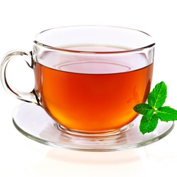

Hello World

Tea world
Tēja ir dzēriens, ko pagatavo, ar karstu ūdeni aplejot tējas koka (Camellia sinensis) daļas un ļaujot tām dažas minūtes ievilkties. Tējas, kas tiek pagatavotas no citiem augiem, tiek sauktas par zāļu tējām.
Ķīnas leģenda vēsta, ka 2737. gadā pirms mūsu ēras imperators un zinātnieks Čens Nungs nejauši atklāja tējas īpašības, kad vējš iepūta tējas krūma lapas katlā ar verdošu ūdeni.
THE TEA